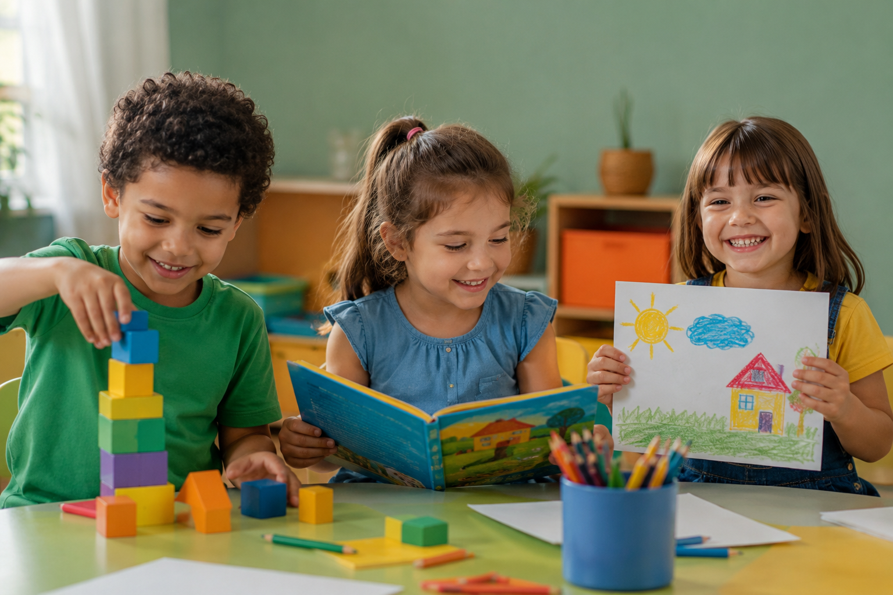
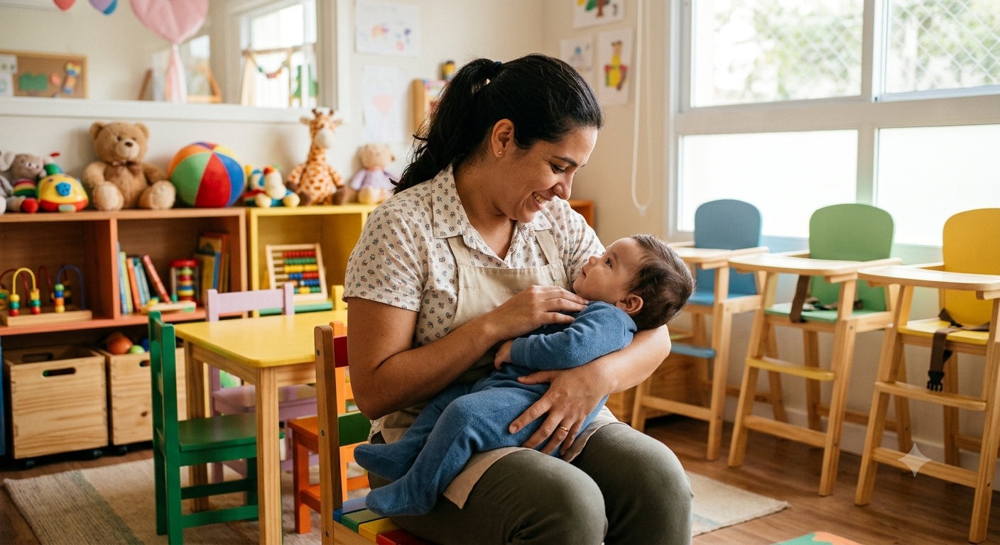
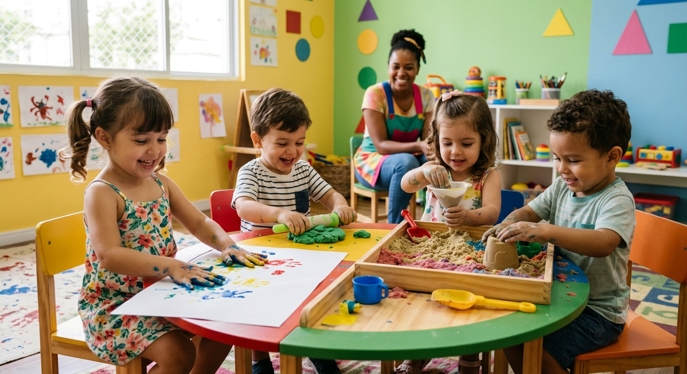
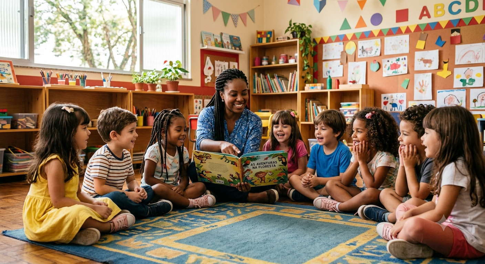

Olhar individual
Na nossa casa, nenhuma criança passa despercebida. Cada aluno tem um acompanhamento próximo e no seu próprio ritmo.
Do Berçário ao Pré-Escolar, com aprendizagem, cuidado e desenvolvimento guiados por amor e excelência.

Cada detalhe do nosso dia a dia foi pensado para o desenvolvimento completo do seu filho, com acolhimento, estímulo e muita alegria.
Na nossa casa, nenhuma criança passa despercebida. Cada aluno tem um acompanhamento próximo e no seu próprio ritmo.
Relações de cuidado verdadeiro entre educadores e crianças, porque aprender fica mais leve quando se é bem acolhido.
Práticas pedagógicas inclusivas, com respeito às diferenças e a participação de todas as crianças no mesmo universo de aprendizagem.
Jogos, música, arte e contação de histórias como caminhos para a alfabetização, a linguagem e o pensamento.
Alimentação pensada para o crescimento, com momentos de experimentação e aprendizado sobre bons hábitos alimentares.
Quando família e escola trabalham juntas, quem mais ganha é a criança. Por isso, a parceria com as famílias é constante.
Uma trajetória completa e segura, acompanhando cada fase do desenvolvimento do seu filho.

Cuidado delicado, acolhimento e os primeiros estímulos sensoriais para os bebês.

Exploração do mundo, autonomia e as primeiras descobertas com muita brincadeira.

Alfabetização, preparação para o Ensino Fundamental e o grande momento da formatura.
Nossos projetos transformam o aprendizado em experiências inesquecíveis para as crianças.
Cada criança escreve e ilustra o seu próprio livro, virando autora da própria história. Um convite ao mundo da leitura e da imaginação.
As crianças participam de receitas nutritivas, como o nosso milkshake de cacau, e aprendem na prática sobre alimentação.
"Que sílaba tem no balão?" É assim, brincando com letras, sons e rimas, que as crianças se encantam pela linguagem.
Arraiá, dia da mochila maluca, baile de máscaras e muito mais. Celebrações que marcam a infância e criam memórias.
Do dia a dia na sala às datas especiais, cada momento vira lembrança boa.
Estamos em Palhoça/SC, de fácil acesso. Agende uma visita e veja com seus próprios olhos como é o nosso dia a dia.
"Aqui, nenhuma criança passa despercebida. O olhar é individual para cada criança."
"Quando família e escola trabalham juntas, quem mais ganha é a criança. Construindo histórias, aprendizados e vínculos todos os dias."
"Educação infantil com amor e excelência, do Berçário ao Pré-Escolar. Aprendizagem, cuidado e desenvolvimento."
Fale com a gente pelo WhatsApp ou visite a escola em Palhoça/SC. Será um prazer receber você e a sua criança.